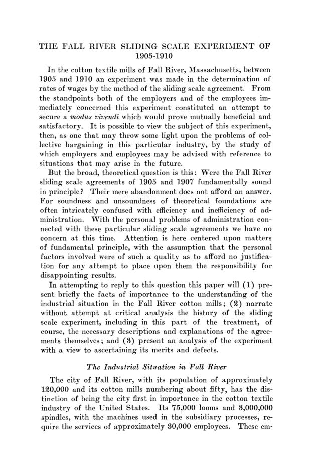

Howard e a escala móvel de Fall River
Leitura: 8 min
Entre 1905 e 1910, as fiações de Fall River ligaram o salário dos tecelões à margem entre o preço do algodão e o do tecido. Stanley E. Howard conta a experiência e testa sua premissa com os números de 25 anos.


Em julho de 1904, depois de um período de desemprego anormal e de um corte de cerca de 10% nos salários em novembro de 1903, as fiações filiadas à associação patronal de Fall River anunciaram nova redução, de 12,5%, a partir de 25 de julho. Veio a grande greve de 1904. Por quase seis meses, a indústria de algodão da cidade ficou parada.
O trabalho recomeçou em 18 de janeiro de 1905, com um compromisso: o governador Douglas, de Massachusetts, investigaria a margem entre o custo do algodão e o preço do tecido e diria com que margem média os industriais deveriam pagar um bônus de 5% sobre os salários. Em 17 de maio, o governador concluiu que a margem necessária era de 74,38 centavos. Em 18 de janeiro, ela estava em 67,80. Os operários aceitaram a tarifa de 17,32 centavos por peça tecida, à espera de dias melhores.
É o ponto de partida do artigo de Stanley E. Howard, do Dartmouth College, na American Economic Review de setembro de 1917. A pergunta é teórica: os acordos de escala móvel de 1905 e 1907 eram sólidos em princípio? O abandono, diz ele, não responde à pergunta.
Como era a indústria de Fall River?
Com cerca de 120 mil habitantes e perto de cinquenta fiações, Fall River era o primeiro centro da indústria de algodão americana: 75 mil teares, 3 milhões de fusos e uns 30 mil empregados. A negociação coletiva tinha dois lados organizados. Pelos trabalhadores, o Textile Council, formado pelos sindicatos de fiandeiros de mule, tecelões, operadores de engomadeira, cardadores e ajustadores de teares. Pelos patrões, a Cotton Manufacturers' Association, que reunia quase todas as fiações.
A exceção era a Fall River Iron Works, com cerca de 12 mil teares e 485 mil fusos, que se recusava a negociar por meio da associação. Mesmo assim, havia uniformidade de política salarial na cidade: as mudanças de salário eram praticamente iguais entre os departamentos, e a tarifa de tecelagem de um tecido estampado padrão servia de base para todas as disputas gerais.
Como se calculava a margem?
A margem de lucro era medida por unidade de produto. Multiplicava-se o preço do algodão middling upland por 8, para obter o preço de 8 libras; multiplicava-se o preço por jarda do tecido de 28 polegadas por 45 e o do tecido de 38,5 polegadas por 33,11, o número de jardas de uma peça; somavam-se os dois produtos, dividia-se por dois e subtraía-se o preço do algodão. Com os dados de 1881, a margem dava 108,52 centavos.
Pelo acordo de 25 de outubro de 1905, a tarifa de tecelagem de 18 centavos por peça correspondia à margem básica de 72,5 centavos, e era o mínimo. Acima dela, o salário subia em degraus, com recálculo semanal. A tarifa média sob o acordo foi de só 18,61 centavos, um bônus médio de 3,38%, metade da recomposição desejada. E as variações de semana a semana levaram os operários a duvidar da própria base teórica do arranjo.
Em maio de 1906, fiações de tecidos finos de Massachusetts e Connecticut deram aumentos espontâneos de 10%. Em 8 de junho, o Textile Council pediu o fim da experiência. Os industriais cederam: a tarifa de 19,80 centavos vigorou a partir de 2 de julho de 1906, e a de 21,78, a partir de 26 de novembro, quando a margem estava perto de 95 centavos.
O que aconteceu com o segundo acordo?
Em maio de 1907, com margens muito largas, os operários pediram 10% de aumento. Os patrões concederam, com nova escala móvel: mínimo de 18 centavos à margem de 72,5 e máximo de 23,96 centavos à margem de 115. Os ajustes passaram a ser semestrais, pela margem média dos seis meses anteriores. O acordo começou com 23,96 centavos, a maior tarifa já paga em Fall River.
A crise financeira de 1907 chegou às fiações. Empresas sem dinheiro para comprar matéria-prima e pagar salários, atacadistas apertados por juros muito altos e semana de trabalho reduzida marcaram a primavera de 1908. Em outras cidades da Nova Inglaterra, os salários foram cortados; em Fall River, a escala adiou o corte até o fim de maio.
Em 19 de novembro de 1908, a associação patronal abriu mão do corte, em carta ao Textile Council, deixando claro que o pagamento extra não criava precedente. O gesto se repetiu nos semestres seguintes, e a tarifa ficou em 19,66 centavos. Em fevereiro de 1910, decepcionados porque os salários não subiam, os operários votaram pela saída. Propuseram nova escala, de 19,66 centavos à margem de 67,5 até 26,03 à margem de 115, o que significaria aumento de 8% a 10%. Os industriais recusaram, e a experiência terminou.
O que os números mostram?
A primeira crítica de Howard é que a escala não tinha base na experiência. Com uma tabela de salários, preços e margens de 1880 a 1915, ele mostra que, nos 25 anos anteriores a 1905, as mudanças de salário não guardaram relação consistente com a margem, que o ajuste foi mais preciso nas altas do que nas quedas e que os grandes cortes coincidiram com crises gerais.
O último resultado, observa o autor, é paradoxal: se a margem determinasse os salários, a alta do algodão deveria baixá-los, não elevá-los. A conclusão é que a escala não reproduzia o mecanismo competitivo pelo qual os salários da indústria vinham sendo ajustados.
Por que a margem não mede a capacidade de pagar?
A segunda crítica é o desemprego. O industrial em dificuldade pode cortar salários ou reduzir a produção, e em superprodução a segunda saída é a lógica. Em Massachusetts, a parcela de operários de algodão desempregados em algum momento do ano chegou a pelo menos 10% em dez dos 28 anos entre 1886 e 1913, com 24,1% em 1904 e 19,7% em 1908.
“A escala móvel não assegura emprego.” (“the sliding scale does not assure employment”)
Terceiro, a margem ignora o volume vendido e os custos fixos: margens estreitas com vendas grandes podem render mais dividendos que margens largas com vendas pequenas. Quarto, a margem real é difícil de achar. Só dois tecidos entravam no cálculo, e o preço médio do algodão não correspondia ao das compras efetivas: nos cinco anos da experiência, mais de 57% das compras das fiações do Norte se concentraram de outubro a janeiro. Calcular a margem verdadeira exigiria abrir a política comercial de cada empresa aos empregados e aos concorrentes.
Quem decide a escala?
Quinto, os salários não dependem só das condições internas da indústria. A oferta de trabalho varia com a população e com a demanda de outros setores: em 1916, com as fábricas de munições disputando operários, os trabalhadores têxteis obtiveram aumentos de cerca de 30%. Qualquer escala teria de ser revista com frequência.
“A escala não deslizaria; viraria uma nova escala.” (“the scale would not slide; it would become a new scale.”)
Por fim, o desenho da tabela é questão de poder de barganha. Não há critério para dizer qual escala é economicamente correta, nem para medir a capacidade de pagar de uma indústria. O governador Douglas fez certas deduções para dividendos e depreciação em 1905, mas outros fariam outras. Que, no longo prazo, cada lado ganhe tanto quanto perde é, para Howard, uma tese sem prova.
Na minha leitura
Na minha leitura, o artigo é um exemplo cedo de teste empírico de uma regra de política. Howard não discute as pessoas envolvidas; pergunta se a premissa do contrato, a de que salários acompanham a margem, aparece nos dados, e responde com um coeficiente de correlação calculado sobre 24 anos.
A lição vale para qualquer indexação. Um indicador escolhido por ser simples e público pode não medir o que se quer, e quanto mais preciso ele se torna, mais informação privada exige. A escala de Fall River falhou nos dois sentidos: era pública demais para ser exata e exata de menos para ser aceita.
Glossário
- Escala móvel
- acordo que reajusta salários automaticamente conforme um indicador de preços ou de margem.
- Margem de lucro (Fall River)
- diferença entre o preço de uma peça de tecido estampado e o do algodão bruto nela contido.
- Tarifa por peça
- salário pago por unidade produzida; em Fall River, por peça de tecido.
- Coeficiente de correlação
- medida, entre −1 e +1, de quanto duas séries variam juntas.
- Erro provável
- medida da margem de incerteza de um coeficiente estatístico.
- Defasagem
- atraso suposto entre a variação de uma série e a resposta de outra.
Fontes
- The Fall River Sliding Scale Experiment of 1905-1910 — Stanley E. Howard (Dartmouth College) (pp. 530–552). JSTOR · Internet Archive (PDF)
- Edição completa, com os demais artigos: Nº 148 do Arquivo.
Documento em domínio público (EUA, publicado antes de 1931), via JSTOR Early Journal Content e Internet Archive. Resumo e comentário do autor deste site, sem afiliação com a American Economic Association. Encontrou um erro? Escreva: a correção é publicada no próprio texto, com data.
← Westerfield e as reservas do Federal Reserve ↑ Nº 148 · As reservas do Federal Reserve, a escala de Fall River e o Pacífico